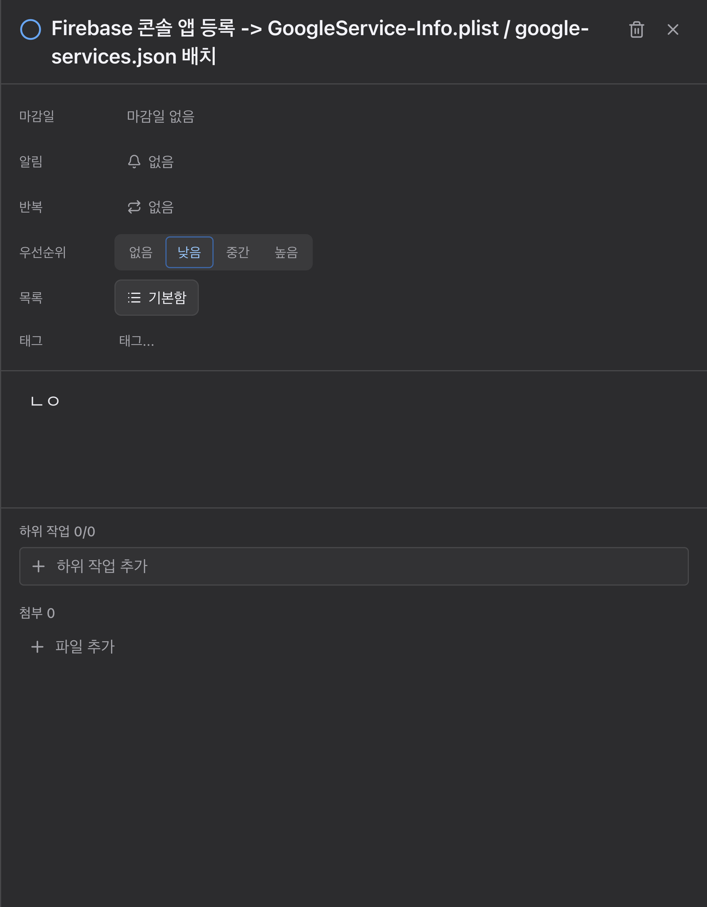
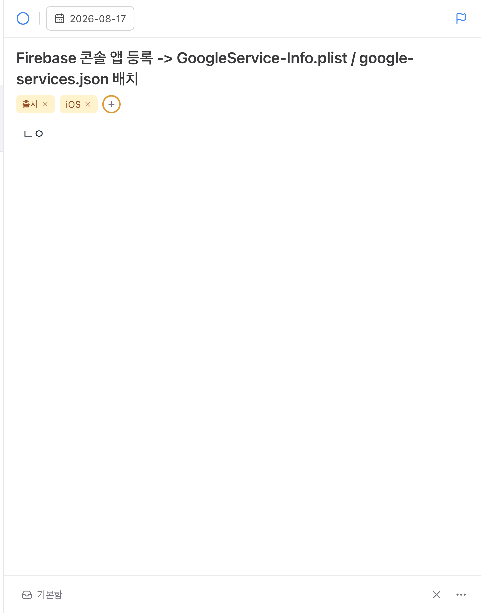
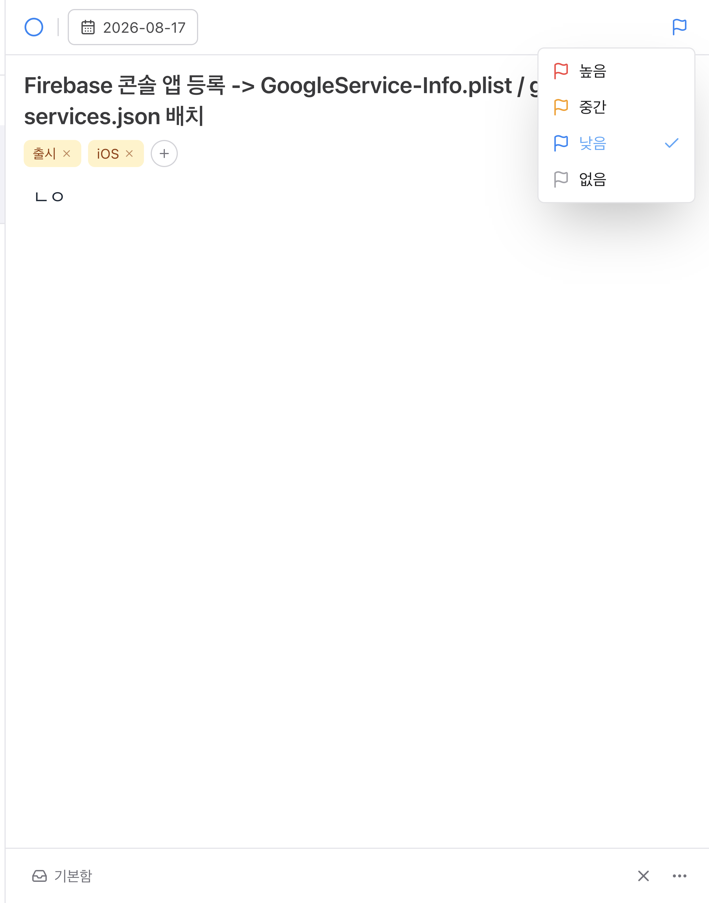
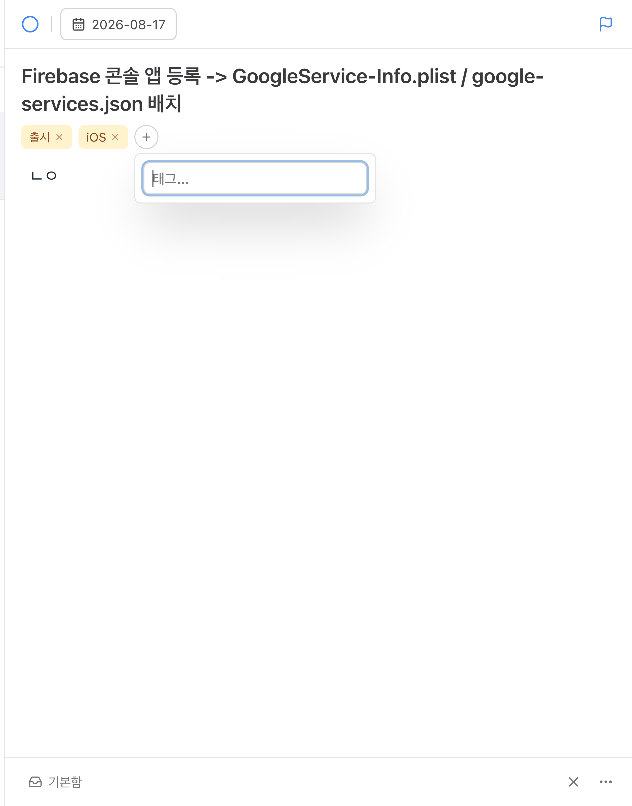
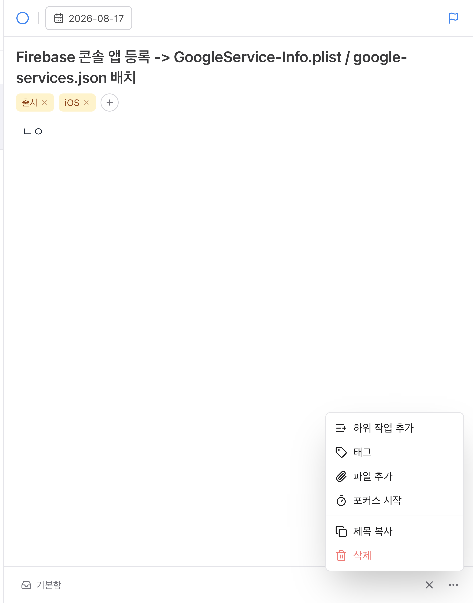
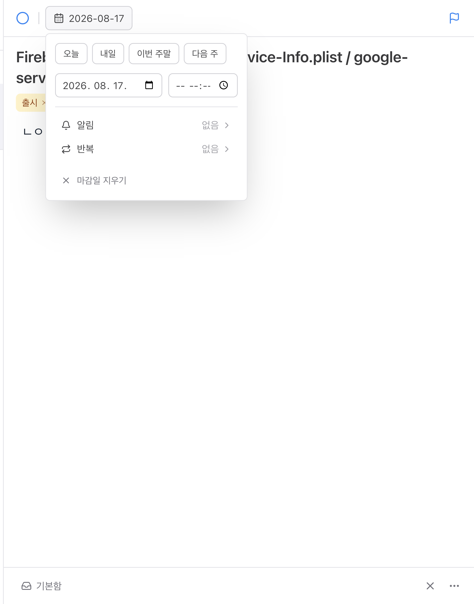

상세 패널 TickTick 배치 전환
1 · 요청 4건 → 구현
| 요청 | 구현 | 파일 |
|---|---|---|
| ① 우측 상단 깃발 → 우선순위 | 깃발 아이콘 하나가 현재 등급을 색으로 알리고, 누르면 높음·중간·낮음·없음이 뜬다(선택 항목에 체크). 4칸짜리 세그먼티드를 없앴다. | PriorityMenu.tsx 새 파일 |
| ② 태그 | 칩 + 원형 (+). (+)를 누르면 입력과 함께 저장소에서 이미 쓰인 태그가 목록으로 뜬다. 입력한 말로 좁혀지고, 이미 붙은 태그는 빠진다. | TagPicker.tsx 새 파일 |
| ③ 우측 하단 ⋯ | 하위 작업 추가 · 태그 · 파일 추가 · 포커스 시작 / 제목 복사 · 삭제. 이 앱에 실제로 있는 기능만 넣었다(결정 3번). | TaskMoreMenu.tsx 새 파일 |
| ④ md 작성칸이 너무 작다 | 메타를 상단바·하단바·⋯로 흩어 보내고 남는 세로를 메모가 전부 가져간다(flex-1 min-h-[240px]). 하위작업·첨부는 비어 있으면 아예 자리를 차지하지 않는다. | TaskDetail.tsx |
2 · 전후


| 전 | 후 | |
|---|---|---|
| 메타 영역 상시 컨트롤 | 9개 (마감일·알림·반복·우선순위 4칸·목록·태그 입력) | 3개 (기한·깃발·태그 +) |
| 상시 노출 라벨 | 6개 | 0개 — 아이콘과 자리가 라벨을 대신한다 |
| 패널 전체 버튼(실측) | — | 7개 |
| 메모 편집기(실측) | — | 591 × 579px (패널 높이의 72%) |
| 하위작업 · 첨부 | 늘 자리를 차지 | 비어 있으면 숨고, ⋯에서 꺼낸다 |
실측값은 실행 중인 앱을 CDP(Runtime.evaluate)로 재서 얻었습니다. 창 1200 × 800, 상세 패널 폭 624px 기준입니다.
3 · 새 오버레이



기한 팝오버 — 알림·반복을 접어 넣음 (결정 2번)

'언제'에 관한 것은 한곳에 모입니다. 알림·반복이 메타 줄에 따로 있으면 기한과 떨어져 의미 그룹이 깨지고 상단바가 붐빕니다.
각 행은 기존 ReminderPicker·RecurringPicker를 그대로 중첩해 엽니다 — 기능 손실 0. 접힌 자리에서도 열리는지가 회귀 위험이라 테스트로 못박았습니다.
4 · 물어봤던 4가지 결정, 그대로 반영
| # | 질문 | 답 | 반영 |
|---|---|---|---|
| 1 | 부분 차용 vs 전면 교체 | 전면 교체 | 상단바 / 본문 / 하단바 3단으로 통째로 다시 씀 |
| 2 | 알림·반복을 어디에 | 기한 팝오버 안으로 | 구분선 아래 두 행, 값은 우측에 요약 |
| 3 | ⋯ 메뉴 범위 | 이미 있는 기능만 | 없는 기능(기간 설정·이동·복제·고정)은 넣지 않음 |
| 4 | 하위작업 · 첨부 | 있을 때만 메모 아래 | showSubtasks || subtaskCount > 0, attachments.length > 0 |
5 · 실행 중인 앱에서 확인
레이아웃이 붙었다는 것과 눌러서 열린다는 것은 다른 이야기라, 개발 앱을 CDP로 몰아 실제 마우스 이벤트를 보냈습니다(Input.dispatchMouseEvent — Radix 트리거는 click이 아니라 pointerdown을 봅니다).
| 조작 | 결과 |
|---|---|
| 깃발 1회 클릭 | 열림 높음 · 중간 · 낮음 · 없음 |
| 태그 (+) 1회 클릭 | 열림 입력 포커스, 제안 목록 |
| ⋯ 1회 클릭 | 열림 하위 작업 추가 · 태그 · 파일 추가 · 포커스 시작 · 제목 복사 · 삭제 |
| 기한 1회 클릭 | 열림 오늘 · 내일 · 이번 주말 · 다음 주 · 알림 · 반복 · 마감일 지우기 |
| 태그 두 개 입력 후 칩 x로 제거 | 정상 26개 할일 전부 백업과 동일(태그 포함 차이 0) |
QA 전 ~/Library/Application Support/ticktick/ticktick-data.json을 백업하고, 끝난 뒤 백업과 대조해 되돌아왔음을 확인했습니다.
6 · 이 과정에서 발견해 함께 고친 것
고침 ⋯ 버튼이 스스로를 "편집"이라고 말하고 있었다. 보이스오버·키보드 사용자에게 잘못된 이름이었습니다. common.more(더 보기 / More)를 새로 넣고 그것을 씁니다. 접근성 트리를 훑다가 나왔습니다.
고침 상세 패널을 넓히면 가운데 목록 제목이 '전/체' 두 줄로 깨졌다. 제목만 줄어들 수 있어서, 폭이 모자라면 글자 단위로 줄바꿈됐습니다. 이제 검색창이 먼저 양보하고(6rem까지), 그래도 모자랄 때만 제목을 잘라 보입니다. 실측: '오늘'이 32px 한 줄로 온전히 나오고 검색창이 192 → 168px로 줄었습니다.
처음 고칠 때 제목에 min-w-0만 걸었더니 두 줄 깨짐이 한 글자로 잘림으로 바뀌었습니다 — 스크린샷을 다시 찍어보고 잡았습니다.
7 · 테스트 — 통과했다는 것만으로는 아무것도 증명하지 않는다
새 오버레이 3형제는 코드가 먼저 쓰였기 때문에, 나중에 붙인 테스트는 그냥 통과합니다. 그래서 일부러 코드를 고장 내고 대응하는 테스트만 빨개지는지 확인했습니다.
| 심은 결함 | 빨개진 테스트 |
|---|---|
[...PRIORITY_OPTIONS]에서 .reverse() 제거 | FAIL 깃발을 한 번 누르면 열리고, 높음이 맨 위다 |
제안에서 !tags.includes(tag) 필터 제거 | FAIL 이미 붙은 태그는 제안하지 않는다 |
| 태그 추가에서 중복 가드 제거 | FAIL 이미 있는 태그를 다시 넣어도 늘지 않는다 |
빠른 선택이 dueTime을 null로 덮음 | FAIL 빠른 선택은 시각을 건드리지 않는다 |
네 변이가 정확히 그 네 개만 실패시켰고, 나머지 26개는 초록으로 남았습니다. 복원 후 다시 전부 통과.
추가한 테스트 14개는 components/tasks/overlays.test.tsx에 있습니다. 그중 두 개는 "트리거를 한 번 누르면 열린다" — CLAUDE.md에 적힌, 오버레이가 두 번 눌러야 열리던 그 버그 계열을 막는 자리입니다.
8 · 헬스
| 검사 | 결과 |
|---|---|
tsc --build | 0 errors |
biome lint src electron.vite.config.ts | 0 errors (경고 7건은 이번 변경과 무관한 기존 것) |
vitest run | 580 passed / 40 files (직전 566 → +14) |
변경 파일: TaskDetail.tsx, DueDatePicker.tsx, TaskList.tsx, overlays.test.tsx, ko/en 로케일 · 새 파일 PriorityMenu.tsx, TagPicker.tsx, TaskMoreMenu.tsx. TaskDetail.tsx는 494 → 419줄로 줄었습니다.
9 · 남은 것
- 메모 편집기에 placeholder는 이미 들어가 있습니다(
메모를 적어보세요…). 다만 본문이 비어 있어야 보입니다. - TickTick에 있고 우리에게 없는 것들 — 기간(시작~종료) 설정, 다른 목록으로 이동, 복제, 고정 — 은 결정 3번에 따라 넣지 않았습니다. 기능 자체를 원하시면 별건으로 잡겠습니다.
- 우클릭 컨텍스트 메뉴는 아직 손수 만든
<div>입니다(TODOS의 Radix ContextMenu 전환 건). ⋯ 메뉴와 항목이 겹치므로 그때 같이 맞추는 게 낫습니다.